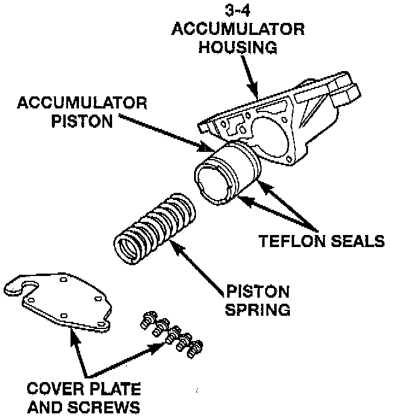

3-4 Accumulator 1

1. Lubricate accumulator piston, seals and housing piston bore with clean transmission fluid.
2. Install new seal rings on accumulator piston.
3. Install piston and spring in housing.
4. Install end plate on housing.
